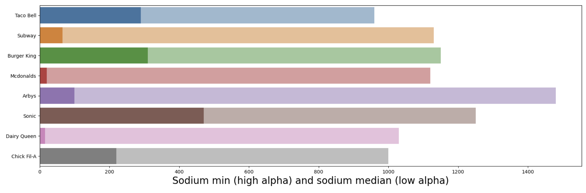
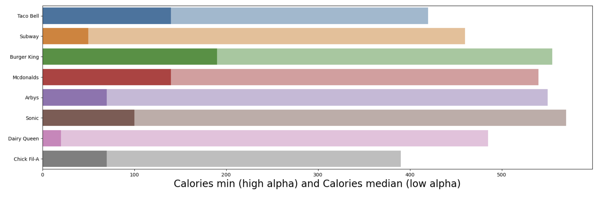
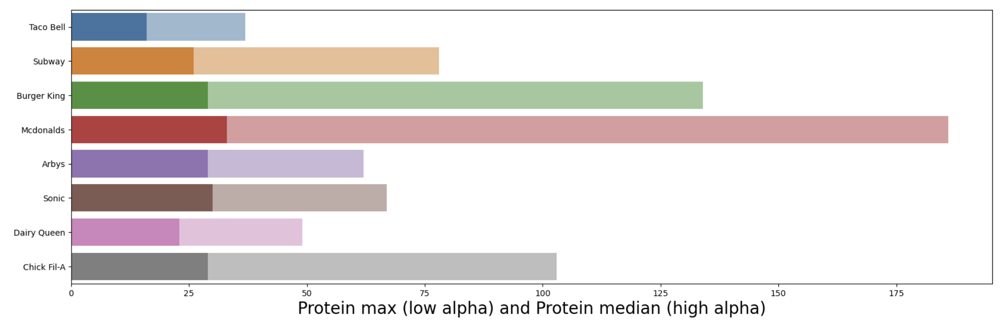
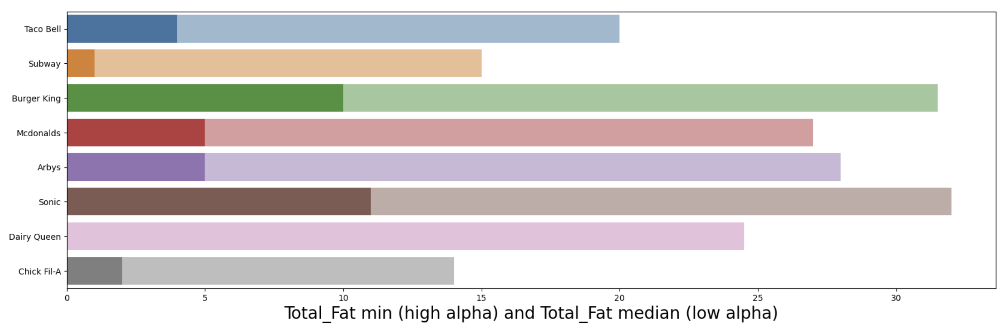

Have you ever found yourself paralyzed by the simple question “Where do you want to eat?” If you’re like many people these days, The very thought of deciding where to eat can send a shiver down your spine. In your defense, how are you supposed to chose? This one, seemingly easy question opens up a barrage of many others: Do I want sitdown or fast food? Chinese or Mexican? Will their food fit with my diet?! With about 50,000 different fast food chains and over 200,000 locations spread out across the US, It can feel impossible to choose.
There are seemingly infinite options, and that’s not even to mention whether or not the food is even good for you! The food we put into our bodies have drastic effects on our physical health. If we aren’t meeting our bodies dietary needs, we can be putting our bodies at some serious risk, especially those who have serious medical conditions. Not eating right now can endanger our bodies in the future.
Today, however, I aim to alleviate some of that worry. I am going to compare eight of the most popular fast food chains and tell you how they stack up against each other and which ones fit best for your specific dietary needs. You got low blood sugar? High colesteral? Are you just starting in the gym and want to find out which fast food place will give you the biggest muscles? No problem! These restaurants have just what you need, all we need to do is a little digging to figure out which one is right for you!
There are Thousands upon thousands of fast food restaurants in just the U.S. alone! With all these choices it can be very hard to figure out where to eat and even harder which ones have the best options for you. The graph below shows how many there are (in the U.S.) of each restaurant we will be looking at.
I used a dataset made by openintro.org that contains almost the entire menue
(not including some sides like fries) from eight different fast food chains:
Taco Bell, Subway, Burger King, Mcdonalds, Arby's, Sonic, Dairy Queen, Chick Fil-A.
I also cross-referenced some of the items from the dataset with the nutrition facts from that restaurant's official website to confirm legitamacy.
Taco Bell is the best option for a low sodium diet as it has the lowest median sodium for all of its items at 960 mg, but Dairy Queen has the lowest sodium option of all eight restaurants being it's side salad at 15 mg of sodium.
Chick-Fil-A is the best option for a low calorie diet as it has the lowest median calories for all of its items at 390 cal, but Dairy Queen has the lowest calorie option of all eight restaurants being it's side salad at 20 cal.
McDonalds is hands down the best option for a high protein diet with both the highest median protein count in its items at 33 g and the highest protein count in an item being its 20 piece Buttermilk Crispy Chicken Tenders at a whopping 186 g of protein!
Chick-Fil-A is the best option for a low fat diet as it has the lowest median amount of fat for all of its items at 14 g, but Dairy Queen has the lowest fat option of all eight restaurants being it's side salad at 0 g of fat.
Chick-Fil-A is the best option for a low carbs diet as it has the lowest median carbs for all of its items at 29 g, but Dairy Queen has the lowest carb option of all eight restaurants being it's Regular Cheese Curds at 0 g of carbohydrates.
Here are the bar graphs showing the minimums, maximums, and medians (depending on the diet being examined) for the different restaurants' menus:
 For all the diets covered, Chick-Fil-A and Dairy Queen are the best restaurants to eat at for low sodium, low carb, low calorie and low fat diets with their wide range of different options with the exception of McDonalds being the best option for a high protein diet. Just these two or three restaurants alone can support most any dietary needs you have.